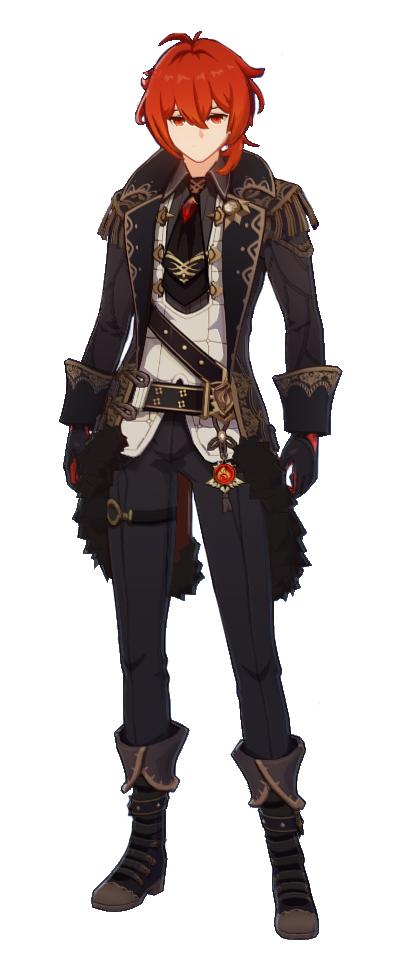

Diluc

Diluc Ragnvindr es un personaje jugable de Genshin Impact. Es el dueño actual de Viñedo del Amanecer y un noble de alta estima en la sociedad de Mondstadt. Aunque parece apático sobre los asuntos de la ciudad, la protege de noche como el rumoreado "Héroe Oscuro".
Personalidad
Kaeya llama a Diluc "antihéroe con problemas de actitud". Diluc fue una vez un joven confiado y apasionado, dedicado a su trabajo con los Caballeros de Favonius. Pero después de la prematura muerte de su padre, Diluc se volvió distante y amargado. No le gusta perder el tiempo en charlas ociosas y se impacienta con facilidad.
Diluc tiene un resentimiento particular hacia los Caballeros de Favonius, a quienes llama "ineficientes" y desprecia en todo momento. Este rencor proviene de la forma de lidiar con la muerte de su padre que tuvo el inspector Eroch, y Diluc no ha reducido su rencor incluso después de que Eroch haya sido despedido de los Caballeros por traidor.
Apariencia
Diluc tiene la piel como porcelana con una complexión delgada y atlética, ojos rojos carmesí y cabello de color escarlata que siempre usa como una cola de caballo desordenada que se extiende hasta la mitad de la espalda. Viste un abrigo negro que está adornado con adornos y borlas dorados, que terminan con ribetes de piel de ébano, y usa pantalones negros que están adornados con cadenas en su muslo derecho, mientras que su Visión se establece en su muslo izquierdo. Diluc también usa guantes, que son negros en la parte superior, mientras que la parte inferior está teñida de rojo.
Perfil
Como el hombre más rico de Mondstadt, Diluc siempre muestra su lado más exquisito. Sin embargo, su verdadera naturaleza es la de un guerrero con una gran determinación. Protege a Mondstadt con todas sus fuerzas en todo momento.